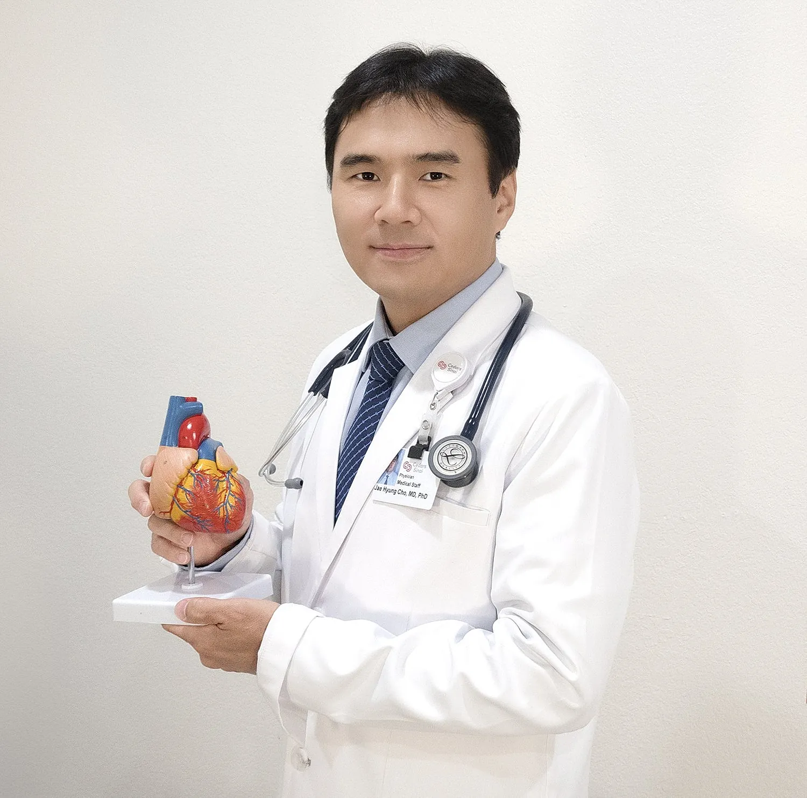

의료진 소개
정확한 진단과 신뢰할 수 있는 치료로 환자분의 심장 건강을 지켜드립니다.

조재형
Jae Hyung Cho, MD, PhD
Physician
의학박사 조재형 원장
내과 · 심장내과 전문의, 부정맥 연구 박사
조재형 원장은 고혈압, 고지혈증, 협심증, 심근경색, 심부전, 부정맥 등 다양한 심장 질환을 가진 성인 환자에게 종합적인 심장내과 진료를 제공합니다.
2013년 일리노이 주립대학교 어바나-샴페인에서 내과 레지던트를 마쳤고, 2021년 시더스 사이나이 메디컬 센터에서 심장내과 펠로우십을 수료했으며, 같은 기관에서 부정맥 연구로 박사학위를 받았습니다. 클리블랜드 클리닉에서 임상조교수를 역임했으며 현재 시더스 사이나이 메디컬 센터의 메디컬 스태프로 활동하고 있습니다.
주요 진료 분야
- 부정맥
- 관상동맥질환
- 심부전
- 심장초음파
- 심혈관 질환 예방
전문의 자격
- 미국 내과학회(ABIM) 심장내과 전문의
- 미국 내과학회(ABIM) 내과 전문의
- 미국 심초음파 위원회(NBE) 인증 · 성인 종합 심초음파
수련 및 경력
- 현재대표원장조재형 심장내과
- 현재메디컬 스태프Cedars-Sinai Medical Center
- 역임임상조교수Cleveland Clinic
- 2021심장내과 펠로우십Cedars-Sinai Medical Center
- Ph.D.박사학위 (부정맥 연구)Cedars-Sinai Graduate School of Biomedical Sciences
- 2013내과 레지던트University of Illinois at Urbana–Champaign
수상
- 미국심장학회(ACC) 젊은 연구자상 최종 후보
- 미국부정맥학회(HRS) 젊은 연구자상 최종 후보
학회 회원
- 미국심장협회 (AHA) 회원
- 미국부정맥학회 (HRS) 회원
- 미국심장학회 (ACC) 회원
Research
연구 및 학술 활동
Nature, Circulation 등 국제 학술지에 부정맥 · 심부전 · 심장 영상 분야 연구를 발표해 왔습니다.
연구 논문 및 저서
- 의학 서적 『Arytmier』 중 ‘심장 부정맥의 유전자 및 세포 치료’ 챕터 저술
- Nature, Circulation, European Heart Journal 등에 심장 질환, 심부전 기전, 인공지능(AI) 심기능 평가 연구 게재
- JACC: Clinical Electrophysiology, Circulation: Arrhythmia and Electrophysiology 등에 부정맥 기전 및 박출률 보존 심부전(HFpEF) 돌연사 연구 게재
- PLoS One, American Journal of Medicine 등에 코로나19 환자의 부정맥, 폐색전증 심초음파 예후 인자 연구 게재
학회 발표 및 초청 강연
- 시더스 사이나이 Smidt 심장 연구소 및 부정맥학회(HRS)에서 HFpEF 심실 부정맥 초청 강연
- 미국심장학회(ACC) · 미국심장협회(AHA)에서 세포 치료, 코로나19 부정맥, 심장 아밀로이드증 등 다수 발표
- 부정맥학회(HRS)에서 HFpEF 돌연사, 심박수 변동성, 심장 유래 세포 치료 효과 발표
- 미국내과의학회(ACP), 미국신장학회(ASN), 병원의학회(SHM) 등에서 임상 연구 발표
Bibliography
전체 논문 목록
연구 논문23
- He B, Kwan AC, Cho JH, Yuan N, Pollick C, Shiota T, Ebinger J, Bello NA, Wei J, Josan K, Duffy G, Jujjavarapu M, Siegel R, Cheng S, Zou JY, Ouyang D. Blinded, randomized trial of sonographer versus AI cardiac function assessment. Nature. 2023 Apr 5. doi: 10.1038/s41586-023-05947-3. Online ahead of print. PMID: 37020027
- Kim MY, Pellot I, Bresee C, Nawaz A, Fournier M, Cho JH, Cingolani E. Diet modification reverses diastolic dysfunction in rats with heart failure and preserved ejection fraction. JMCC Plus. March 2023 Volume 3.
- Zhang R, Mesquita T, Cho JH, Li C, Sanchez L, Holm K, Akhmerov A, Liu W, Li Y, Ibrahim AG, Cingolani E. Systemic Delivery of Extracellular Vesicles Attenuates Atrial Fibrillation in Heart Failure With Preserved Ejection Fraction. JACC Clin Electrophysiol. 2023 Feb;9(2):147-158. doi: 10.1016/j.jacep.2022.09.012. Epub 2022 Nov 30. PMID: 36858679
- Mesquita T, Zhang R, Cho JH, Zhang R, Lin YN, Sanchez L, Goldhaber JI, Yu JK, Liang JA, Liu W, Trayanova NA, Cingolani E. Mechanisms of Sinoatrial Node Dysfunction in Heart Failure with Preserved Ejection Fraction. Circulation. 2022 Jan 4;145(1):45-60. doi: 10.1161/CIRCULATIONAHA.121.054976. Epub 2021 Dec 14. PMID: 34905696
- Cho JH, Leong D, Cuk N, Ebinger JE, Bresee C, Yoon SH, Ehdaie A, Shehata M, Wang X, Chugh SS, Marbán E, Cingolani E. Delayed repolarization and ventricular tachycardia in patients with heart failure and preserved ejection fraction. PLoS One. 2021 Jul 13;16(7):e0254641. doi: 10.1371/journal.pone.0254641. eCollection 2021. PMID: 34255806
- Cho JH, Namazi A, Shelton R, Ramireddy A, Ehdaie A, Shehata M, Wang X, Marbán E, Chugh SS, Cingolani E. Cardiac arrhythmias in hospitalized patients with COVID-19: A prospective observational study in the western United States. PLoS One. 2020 Dec 28;15(12):e0244533. doi: 10.1371/journal.pone.0244533. PMID: 33370347; PMCID: PMC7769280.
- Shelton R, Cho JH, Joshi S, Betzold R, Shehata M, Ehdaie A, Swerdlow C. Treatment of atypical pacemaker-mediated tachycardia with ablation of the retrograde atrioventricular nodal pathway. J Cardiovasc Electrophysiol. 2020 May;31(5):1213-1217. doi: 10.1111/jce.14424. Epub 2020 Mar 9. PMID: 32108404.
- Cho JH, Zhang R, Aynaszyan S, Holm K, Goldhaber JI, Marbán E, Cingolani E. Ventricular Arrhythmias Underlie Sudden Death in Rats With Heart Failure and Preserved Ejection Fraction. Circ Arrhythm Electrophysiol. 2018 Aug;11(8):e006452. doi: 10.1161/CIRCEP.118.006452. PMID: 30030266; PMCID: PMC6091890.
- Cho JH, Zhang R, Kilfoil PJ, Gallet R, de Couto G, Bresee C, Goldhaber JI, Marbán E, Cingolani E. Delayed Repolarization Underlies Ventricular Arrhythmias in Rats With Heart Failure and Preserved Ejection Fraction. Circulation. 2017 Nov 21;136(21):2037-2050. doi: 10.1161/CIRCULATIONAHA.117.028202. Epub 2017 Oct 3. PMID: 28974519; PMCID: PMC5698112.
- Grigorian-Shamagian L, Liu W, Fereydooni S, Middleton RC, Valle J, Cho JH, Marbán E. Cardiac and systemic rejuvenation after cardiosphere-derived cell therapy in senescent rats. Eur Heart J. 2017 Oct 14;38(39):2957-2967. doi: 10.1093/eurheartj/ehx454. PMID: 29020403; PMCID: PMC5837602.
- Cho JH, Youn SJ, Moore JC, Kyriakakis R, Vekstein C, Militello M, Poe SM, Wolski K, Tchou PJ, Varma N, Niebauer MJ, Bhargava M, Saliba WI, Wazni OM, Lindsay BD, Wilkoff BL, Chung MK. Safety of Oral Dofetilide Reloading for Treatment of Atrial Arrhythmias. Circ Arrhythm Electrophysiol. 2017 Oct;10(10):e005333. doi: 10.1161/CIRCEP.117.005333. PMID: 29038104; PMCID: PMC5685174.
- Cho JH, Selen MA, Kocheril AG. Screening of young competitive athletes for the prevention of sudden cardiac death with a wireless electrocardiographic transmission device: a pilot study. BMC Res Notes. 2015 Aug 11;8:342. doi: 10.1186/s13104-015-1311-9. PMID: 26260154; PMCID: PMC4531846.
- Jae Hyung Cho, Srinivasan Sattiraju, Sanjay Mehta, L. Scott Cook and Woubeshet Ayenew. Surgical Removal of Left Atrial Appendage Thrombus in a Patient with Acute Ischemic Stroke. Heart Research Open Journal, 2015, 2(3):100-102
- Cho JH, Kaw R, Chhabra J, Kola S, Mahata I, Shahani S, Kocheril AG. Prognostic implications of diastolic dysfunction in patients with acute pulmonary embolism. BMC Res Notes. 2014 Sep 6;7:610. doi: 10.1186/1756-0500-7-610. PMID: 25194763; PMCID: PMC4167149.
- Cho JH, Kutti Sridharan G, Kim SH, Kaw R, Abburi T, Irfan A, Kocheril AG. Right ventricular dysfunction as an echocardiographic prognostic factor in hemodynamically stable patients with acute pulmonary embolism: a meta-analysis. BMC Cardiovasc Disord. 2014 May 6;14:64. doi: 10.1186/1471-2261-14-64. PMID: 24884693; PMCID: PMC4029836.
- Cho JH, Sattiraju S, Colla M, Mehta S, Missov E. A classically enlarged cardiac silhouette. Am J Med. 2013 Dec;126(12):e5-6. doi: 10.1016/j.amjmed.2013.07.005. Epub 2013 Sep 25. PMID: 24075354.
- Cho JH, Brockenbrough K. Right main pulmonary artery thrombus after type a aortic dissection repair. Ann Thorac Cardiovasc Surg. 2014;20 Suppl:794-6. doi: 10.5761/atcs.cr.13-00067. Epub 2013 Oct 3. PMID: 24088907.
- Cho JH, Holley JL. Squamous cell carcinoma of the bladder in a female associated with multiple bladder stones. BMC Res Notes. 2013 Sep 4;6:354. doi: 10.1186/1756-0500-6-354. PMID: 24007445; PMCID: PMC3848612.
- Jae Hyung Cho, Digant Bhatt, Andrea V. Brasch, Sanjay S. Mehta. Postpartum Impending Paradoxical Embolism. Carle Selected Papers, 2013 Apr; 55(2): 23-25
- Cho JH, Sattiraju S, Mehta S, Missov E. Delayed ventricular septal rupture complicating acute inferior wall myocardial infarction. BMC Res Notes. 2013 Mar 28;6:124. doi: 10.1186/1756-0500-6-124. PMID: 23537320; PMCID: PMC3620691.
- Irfan A, Hublikar S, Cho JH, Hill J. The value of history and goals of care with code status; even in an emergency setting. BMJ Case Rep. 2013 Jan 25;2013:bcr2012006962. doi: 10.1136/bcr-2012-006962. PMID: 23355556; PMCID: PMC3604545.
- Lee SY, Kim DK, Cho JH, Koh JY, Yoon YH. Inhibitory effect of bevacizumab on the angiogenesis and growth of retinoblastoma. Arch Ophthalmol. 2008 Jul;126(7):953-8. doi: 10.1001/archopht.126.7.953. PMID: 18625942.
- Hwang JJ, Lee SJ, Kim TY, Cho JH, Koh JY. Zinc and 4-hydroxy-2-nonenal mediate lysosomal membrane permeabilization induced by H2O2 in cultured hippocampal neurons. J Neurosci. 2008 Mar 19;28(12):3114-22. doi: 10.1523/JNEUROSCI.0199-08.2008. PMID: 18354014; PMCID: PMC6670692.
리뷰 논문2
- Cho JH. Sudden Death and Ventricular Arrhythmias in Heart Failure With Preserved Ejection Fraction. Korean Circ J. 2022 Apr;52(4):251-264. doi: 10.4070/kcj.2021.0420. Review. PMID: 35388994; PMCID: PMC8989786
- Jae Hyung Cho, Affan Irfan, Abraham G. Kocheril. The Effects of Music on The Heart. Carle Selected Papers, 2013 Apr; 55(2): 9-12
의학 서적 챕터1
- Jae Hyung Cho, Christer Sylven, Eugenio Cingolani. Gene and cell therapy for the treatment of cardiac arrhythmia. In: Arytmier, 2019
학회 초록 및 발표24
- The effects of diet modification on the progression of heart failure with preserved ejection fractionJae Hyung Cho, Isabelle Pellot, Myung Yoon Kim, Asma Nawaz, Eduardo Marbán, Eugenio CingolaniBasic Cardiovascular Sciences Scientific Sessions, Chicago, IL, USA, July 27, 2022
- High-salt diet increases blood cholesterol: Potential role of hepatic enzyme CYP51Myung Yoon Kim, Asma Nawaz, Isabelle Pellot, Prediman K. Shah, Eugenio Cingolani, Eduardo Marbán, Jae Hyung ChoBasic Cardiovascular Sciences Scientific Sessions, Chicago, IL, USA, July 27, 2022
- MicroRNA-16 mediates anti-fibrotic effects of cardiosphere-derived cells in rats with heart failure and preserved ejection fractionJae Hyung Cho, Alex Rajewski, Thassio Mesquita, Ahmed Ibrahim, Russell Rogers, Isabelle Pellot, Weixin Liu, Lizbeth Sanchez, Eugenio Cingolani, Eduardo MarbánAmerican College of Cardiology Scientific Sessions, Washington D.C., USA, April 2, 2022
- Incidence of cardiac arrhythmias in patients with COVID-19: A meta-analysisSean Kim, Isabelle Pellot, MyungYoon Kim, Jae Hyung Cho, Eugenio CingolaniAmerican College of Cardiology Scientific Sessions, Washington D.C., USA, April 2, 2022
- Cardiac arrhythmias in hospitalized patients with COVID-19Jae Hyung Cho, Ali Namazi, Richard Shelton, Archana Ramireddy, Ashkan Ehdaie, Michael Shehata, Xunzhang Wang, Eduardo Marbán, Sumeet S. Chugh, Eugenio CingolaniAmerican Heart Association Scientific Sessions, USA, November 13, 2020
- Rhythm disturbances in patients with cardiac amyloidosis: Analysis from Cedars-Sinai amyloidosis registryJae Hyung Cho, Natasha Cuk, Derek Leong, Ashkan Ehdaie, Eugenio Cingolani, Michael Shehata, Jignesh PatelAmerican Heart Association Scientific Sessions, USA, November 13, 2020
- Decreased Heart Rate Variability and Sudden Cardiac Death in a Rat Model of Heart Failure with Preserved Ejection FractionJae Hyung Cho, Kevin J. Holm, Stephan Aynaszyan, Joshua I. Goldhaber, Eduardo Marbán, Eugenio CingolaniHeart Rhythm Society Scientific Sessions, Boston, MA, USA, May 12, 2018
- Cardiosphere-Derived Cells Reduce Ventricular Arrhythmias and Prolong Survival of Rats with Heart Failure and Preserved Ejection FractionJae Hyung Cho, Peter J. Kilfoil, Ryan Solymani, Kristin Luther, Russell G. Rogers, Geoffrey de Couto, Rui Zhang, Lizbeth Sanchez, Joshua I. Goldhaber, Eduardo Marbán, Eugenio CingolaniHeart Rhythm Society Scientific Sessions, Boston, MA, USA, May 11, 2018
- Chronotropic Incompetence in a Rat Model of Heart Failure with Preserved Ejection FractionJae Hyung Cho, Lilian Grigorian, Russell G. Rogers, Joshua I. Goldhaber, Eduardo Marbán, Eugenio CingolaniAmerican Heart Association Scientific Sessions, Anaheim, CA, USA, November 14, 2017
- Anti-arrhythmic Effects of Heart-Derived Cell Therapy in a Rat Model of Heart Failure with Preserved Ejection FractionJae Hyung Cho, Peter J. Kilfoil, Ryan Solymani, Kristin Luther, Russell G. Rogers, Geoffrey de Couto, Rui Zhang, Lizbeth Sanchez, Joshua I. Goldhaber, Eduardo Marbán, Eugenio CingolaniAmerican Heart Association Scientific Sessions, Anaheim, CA, USA, November 12, 2017
- Abnormal Repolarization and Increased Susceptibility to Ventricular Arrhythmias in a Rat Model of Heart Failure with Preserved Ejection FractionJae Hyung Cho, Rui Zhang, Romain Gallet, Geoffrey de Couto, Eduardo Marbán, Joshua Goldhaber, Eugenio CingolaniHeart Rhythm Society Scientific Sessions, Chicago, IL, USA, May 11, 2017
- Abnormal Repolarization and Increased Susceptibility to Ventricular Arrhythmias in a Rat Model of Heart Failure with Preserved Ejection FractionJae Hyung Cho, Rui Zhang, Romain Gallet, Geoffrey de Couto, Eduardo Marbán, Joshua Goldhaber, Eugenio CingolaniAmerican Heart Association Scientific Sessions, New Orleans, LA, USA, November 15, 2016
- Improvement of Diastolic Function by Exosome Injection in a Rat Model of Heart Failure with Preserved Ejection FractionJae Hyung Cho, Romain Gallet, Geoffrey de Couto, Lizbeth Sanchez, Eduardo Marbán, Eugenio CingolaniAmerican Heart Association Scientific Sessions, New Orleans, LA, USA, November 13, 2016
- Safety of Oral Dofetilide Reloading Compared to Initial Loading for Treatment of Atrial ArrhythmiasJae Hyung Cho, JoEllyn M. Abraham, Roxanne Kyriakakis, Patrick J. Tchou, Mandeep Bhargava, Walid I. Saliba, Bruce L. Wilkoff, Mina K. ChungAmerican College of Cardiology Scientific Sessions, San Diego, CA, USA, March 15, 2015
- Impact of Diastolic Dysfunction on Post-Operative Outcomes after Cardiac Surgery: A Meta-AnalysisJae Hyung Cho, Adrian V. Hernandez, Vinay Pasupuleti, Abhishek Deshpande, Vijaiganesh Nagarajan, Hector Bueno, John PA Ioannidis, Eric H. Boersma, Roop KawAmerican College of Cardiology Scientific Sessions, San Diego, CA, USA, March 14, 2015
- Pre-participation Screening of Young Competitive Athletes for the Prevention of Sudden Cardiac Death Using a New Electrocardiographic DeviceJae Hyung Cho, Mats A. Selen, Abraham G. KocherilAmerican Heart Association Scientific Sessions, Chicago, IL, USA, November 18, 2014
- Diastolic Dysfunction as a Poor Prognostic Factor in Patients with Acute Pulmonary EmbolismJae Hyung Cho, Abraham G. KocherilSociety of Hospital Medicine, Las Vegas, NV, USA, March 25, 2014
- Diastolic Dysfunction as a Prognostic Factor in Patients With Acute Pulmonary EmbolismJae Hyung Cho, Jatin Chhabra, Snigdha Kola, Indrajeet Mahata, Shobha Shahani, Abraham G. KocherilCollege of Medicine Research Symposium, University of Illinois at Urbana-Champaign, Urbana, IL, USA, April 24, 2013
- Right Main Pulmonary Artery Thrombus After Type A Aortic Dissection RepairJae Hyung Cho, Kimberly BrockenbroughAmerican College of Physicians National Meeting, San Francisco, CA, USA, April 12, 2013
- Right Ventricular Dysfunction as an Echocardiographic Prognostic Factor in Hemodynamically Stable Patients with Acute Pulmonary Embolism: a meta-analysisJae Hyung Cho, Gurusaravanan Kutti Sridharan, Seon Ha Kim, Triveni Abburi, Affan Irfan, Abraham G. KocherilAmerican College of Physicians Illinois Chapter Meeting, Springfield, IL, USA, October 26, 2012
- The Impact of Ischemia-Guided Percutaneous Coronary Intervention on Major Cardiovascular Adverse EventsJae Hyung Cho, Young-Hak Kim, Jung-Min Ahn, Seung-Jung ParkCollege of Medicine Research Symposium, University of Illinois at Urbana-Champaign, Urbana, IL, USA, April 19, 2012
- Right Ventricular Dysfunction as an Echocardiographic Prognostic Factor in Hemodynamically Stable Patients with Acute Pulmonary Embolism: a meta-analysisJae Hyung Cho, Gurusaravanan Kutti Sridharan, Seon Ha Kim, Triveni Abburi, Abraham G. KocherilCollege of Medicine Research Symposium, University of Illinois at Urbana-Champaign, Urbana, IL, USA, April 19, 2012
- Hyperkalemia in Hospitalized PatientsFahad Saeed, Muhammad Omer Toor, Noaman Siddiqi, Digant V. Bhatt, Jae Hyung Cho, Nadia Kousar, Jean L. HolleyAmerican Society of Nephrology Kidney Week, Philadelphia, PA, USA, November 11, 2011
- The Impact of Ischemia-Guided Percutaneous Coronary Intervention on Major Adverse Cardiovascular EventsJae Hyung Cho, Young-Hak Kim, Jung-Min Ahn, Seung-Jung ParkAmerican College of Physicians Illinois Chapter Meeting, Peoria, IL, USA, October 26, 2011
심장내과 전문의와 상담하세요
가슴 통증, 두근거림, 숨참, 고혈압이 있으시다면 미루지 말고 진료를 받아보세요.